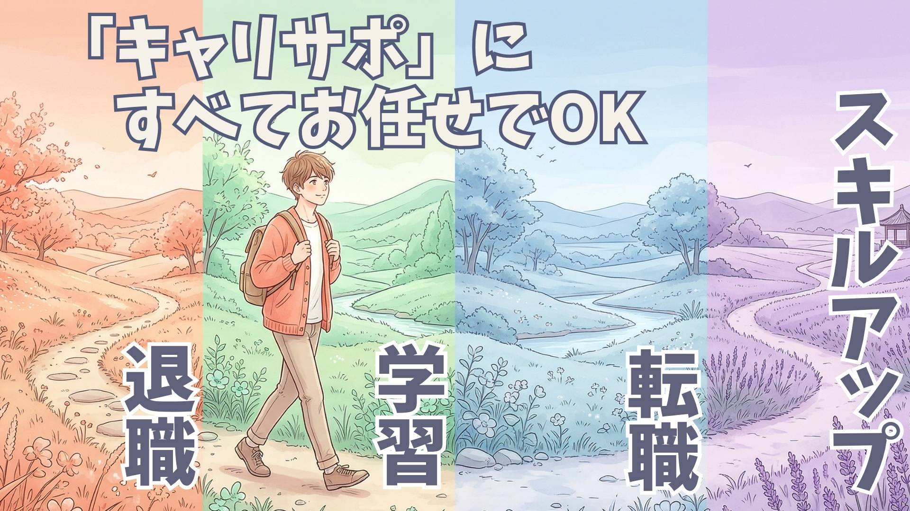

毎月15万円×18ヶ月、合計270万円を受給できました
退職したい気持ちはあったのですが、失業保険や手続きのことが全く分からず不安でした。LINEで相談したところ、必要な流れを丁寧に教えてもらえて安心できました。結果的に毎月約15万円を18ヶ月間、合計で約270万円を受給することができ、焦らずじっくり次のキャリアを考えることができました。一つずつ整理しながら進められたので、ひとりで抱え込まずに済みました。
2年間で合計72万円をもらいながら学べました
仕事を辞めたあと、このままでいいのかなと焦っていましたが、すぐに前向きに働ける状態でもありませんでした。そんな中で、毎月3万円の支援金を24ヶ月間、合計72万円を受け取りながら学習に集中できたのが本当に大きかったです。費用の心配をせずに新しいスキルを身につけられて、無理のないペースで進められたので、気持ちの面でもかなり助かりました。
年収50万円アップ＆休日もしっかり確保できました
転職したいと思っていても、自分に何が合っているのかわからず動けずにいました。相談してからは、求人紹介だけでなく書類作成や面接対策まで丁寧にサポートしてもらえて心強かったです。結果的に自分に合った仕事が見つかり、年収が50万円アップ。さらに休みもしっかり取れる環境になり、ライフワークバランスが劇的に改善しました。仕事もプライベートも充実する毎日に変わりました。
通常48万円の講座が補助金で実質0円で受講できました
今の仕事を続けるだけでいいのか迷っていた時に相談しました。通常なら48万円かかるAIスキルの講座を、補助金を活用することで実質無料で受講できたのは本当に驚きでした。これから必要になるスキルを費用の心配なく学べて、仕事にもプライベートにも活かせる場面が増えました。自分の可能性が広がったと感じています。

はじめまして。
キャリサポです。
今このページを
見ているあなたは、
きっと心のどこかで、
このままじゃ嫌だ
でも、どうしたら
いいかわからない
そんな気持ちを
抱えているのだと思います。
将来のお金の不安。
仕事のつらさ。
辞めたいのに
辞められない毎日。
誰かに相談したくても、
何を話せばいいか
わからない。
頑張らなきゃと思うほど、
心が苦しくなる。
そんな時間を、
ひとりで抱えてきたの
ではないでしょうか。
私たちキャリサポは、
そんな方のためにあります。
人生は、
仕事だけではありません。
でも仕事がつらいと、
毎日そのものが
苦しくなってしまう。
だからこそ私たちは、
ただ転職を
支えるだけではなく、
あなたがもう一度
前を向くための
お手伝いをしたいと
思っています。
実際に、こんな声が
届いています。
そう言っていただけることが、
私たちの何よりの
原動力です。
大きな勇気が
なくても大丈夫です。
完璧な準備もいりません。
必要なのは、
少しだけ変わりたいと
思う気持ちだけです。
その気持ちを、
どうか無駄に
しないでください。
あなたのこれからを、
一緒に考えさせてください。
ひとりで悩む時間を、
安心できる
未来への一歩に。
そのために、
私たちがいます。
キャリサポ 一同